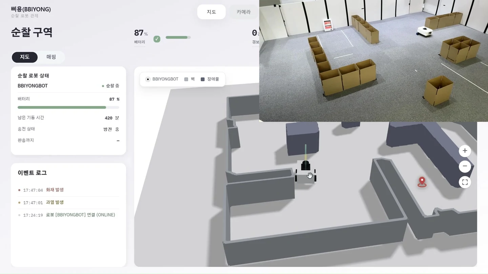
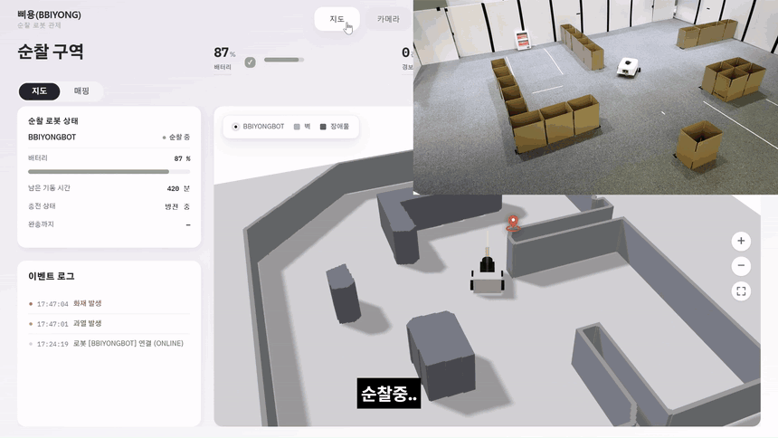

01
로봇에서 동작하는 화재 탐지
화재를 놓치는 경우를 줄이기 위해 모델의 탐지 결과와 판정 기준을 비교하는 평가 도구를 만들었습니다. 실물에서는 탐지 기준을 조정하고, 움직이다 놓친 열원을 다시 찾는 로직을 수정했습니다.
Python · PyTorch · YOLO11n
화재·과열 감지 로봇과 실시간 관제

로봇 위치, 순찰 상태와 사건 로그를 보여주는 팀 관제 화면입니다.
사람이 계속 순찰하기 어려운 공간에서 로봇이 화재와 설비 과열을 감지하고, 사건 위치와 현장 영상을 관제에서 확인하는 서비스입니다.
모델 전체 학습, 자율주행과 관제 화면은 팀원이 맡았습니다. 모델 변환과 실물 경보 시험은 함께 진행했습니다.
소스 코드와 팀 시연화재를 놓치는 경우를 줄이기 위해 모델의 탐지 결과와 판정 기준을 비교하는 평가 도구를 만들었습니다. 실물에서는 탐지 기준을 조정하고, 움직이다 놓친 열원을 다시 찾는 로직을 수정했습니다.
로봇이 경보를 재전송해도 한 번만 저장되도록 DB 제약으로 중복을 방어했습니다. 저장된 사건 번호(eventId)를 로봇 회신, 관제 전달과 사건 영상에 공통으로 사용했습니다. 외부 알림은 대기 상태와 최대 3회 재시도를 따로 관리했습니다.
GitLab MR에서는 임시 MySQL로 빌드·테스트하고, dev 병합 후에는 해당 파트만 배포하도록 나눴습니다. EC2, Nginx와 Docker Compose로 실행 환경을 구성하고, 서버 준비 상태를 확인한 뒤 배포 결과를 전달했습니다.
학습 모델을 로봇 GPU에서 실행하도록 ONNX로 변환하고 TensorRT FP16으로 추론했습니다. 전열기를 시험용 열원으로 사용해 위험 감지부터 관제 경보까지 공동 시험했습니다.
공동 결과의 발표 기록입니다. 전체 영상·주행 지연이나 실제 화재 정확도를 뜻하지 않습니다.

저장 전에 존재 여부를 확인해도 두 요청이 동시에 “없음”을 보면 중복으로 저장하려는 경쟁이 생깁니다. 경보 번호(messageId)의 DB unique 제약으로 최종 중복을 방어하고, 실제 MySQL에 동시에 저장하도록 시험했습니다.
24개 작업이 모두 선조회를 지난 뒤 저장을 경쟁하게 했습니다. 3회 모두 DB 1행, 저장 이후 모의 함수 호출은 각 1회였습니다.
실제 로컬 MySQL을 사용했으며 로봇 회신, 관제와 외부 알림은 모의 처리로 분리했습니다. 기존 중복 방어 로직을 사후 검증한 결과입니다. 운영 환경의 개선 전후 비교는 수행하지 않았습니다.
대기열이 차면 일부 작업이 앞선 작업을 추월해 처리 순서가 바뀌었습니다. 빈자리를 기다리게 바꿔 순서는 지켰지만 합성 작업 400건의 총 시간은 약 4.7초에서 6.2초로 늘었습니다.
이후 로봇 번호로 네 대기열을 나눴습니다. 같은 로봇의 작업은 들어온 순서대로 처리하고, 서로 다른 로봇은 함께 처리하는 구조를 실제 DB 저장 200건으로 비교했습니다.
| 항목 | 단일 경로 | 4분할 |
|---|---|---|
| 배치 처리량 | 176.83건/초 | 607.90건/초 |
| p99 | 1,118ms | 319ms |
| 저장 행 | 200/200 | 200/200 |
| 순서 위반 / 실패 | 0 / 0 | 0 / 0 |
네 로봇 번호에 각 50건, 구조별 3회 중앙값입니다. 후속 알림은 모의 처리이며, 합성 400건의 순서 시험과 실제 DB 200건의 처리량 시험은 서로 다른 실험입니다.
프로그램 종료와 새 작업 접수가 겹치는 경우가 남아 운영에는 반영하지 않았습니다. 특정 로봇에 요청이 몰리는 조건과 로봇 수신부터 화면 표시까지의 실제 부하 시험도 추가 과제입니다.
대기열이 찼을 때 처리 순서가 바뀌는 문제를 확인한 뒤, 기다리도록 바꾸자 순서는 지켰지만 전체 시간은 늘었습니다. 다음에는 같은 로봇의 처리 순서와 사건의 중복 저장 방지를 먼저 기준으로 정하고, 처리량을 바꿀 때 두 조건을 함께 검증하려 합니다.
정상적으로 요청을 처리하는 경로를 확인한 뒤에도 프로그램 종료와 새 작업 접수가 겹치는 경우가 남았습니다. 다음에는 대기열 포화, 종료 시 남은 작업과 재시도 이후 중복 처리 기준을 설계 단계에서 함께 정하려 합니다.
서버가 떠 있는지와 로봇의 경보가 관제까지 전달되는지는 따로 확인해야 합니다. 기기를 연동하는 작업에서는 로봇 송신, DB 저장, 관제 표시와 외부 알림을 구간별로 확인하고, 실패한 지점을 추적할 수 있게 검증하려 합니다.
로봇 수신부터 화면 표시까지의 실제 부하 시험과 실행기 종료 정책의 보완은 추가 과제입니다.